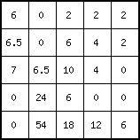
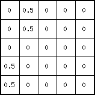
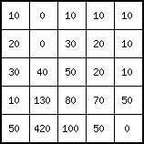
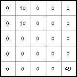

Name
accutriggerflux, accutriggerstate — Input of material downstream over a local drain direction network when transport trigger is exceeded
Synopsis
pcrcalcResultflux= accutriggerflux (ldd,material,transporttrigger)
pcrcalcResultstate= accutriggerstate(ldd,material,transporttrigger)
pcrcalcResultflux,Resultstate= accutriggerflux, accutriggerstate(ldd,material,transporttrigger)
ldd | ldd |
| spatial | |
material | scalar |
| spatial, non spatial | |
transporttrigger | scalar |
| spatial, non spatial | |
Resultflux | scalar |
| spatial | |
Resultstate | scalar |
| spatial |
Operation
These operations describe accumulation of material in a drainage network with transport limited by a trigger: transport occurs once a trigger value has been exceeded. When the trigger value is not exceeded, no transport takes place and all material is stored. This may be the case with landslides, where the soil has to be saturated first before all water (and soil) will be transported downhill, or avalanches where the total amount of snow will come down once triggered.
Both operators perform the same function of accumulation of material with a transport trigger, the only difference between the operators is the sort of result that is saved: accutriggerstate yields storages of material in cells, accutriggerflux yields fluxes of material out of cells.
For each cell, the amount of material input, for instance the amount of
rain, is given by material. This is transported in downstream direction
through the consecutively neighbouring downstream cells, following the
local drain directions on ldd. Each time material moves through a cell
an certain amount is stored in the cell. These storages are saved as
Resultstate, if the accutriggerstate operator is used. The remaining
material is transported out of the cell, these amounts of outflow from each
cell into its neighbouring downstream cell are the result of the
accutriggerflux operator, they are saved as Resultflux.
The function can be described by flow of material through a set of linked
systems, where a cell represents a system. The flow starts at the
cells/systems at the watershed boundaries (defined by ldd) and ends at
a pit cell. The systems are linked by the local drain directions on ldd,
these define the path of flow through the set of cells/systems. Each time
a system is passed, the amount of flow changes.
For a cell/system somewhere on the map, the flow of material is described
by a system. The inflow of the cell is the
sum of the outflow amounts of its upstream neighbours. This inflow
amount is added to the material value in the cell itself. This amount of
material is potentially available for transport out of the cell. If it is less
than or equal to the transporttrigger value of the cell all material is
stored. If it is more than the transporttrigger all material is transported
and nothing is stored.
For each cell, the amount of material which is transported to its
downstream neighbour (or out of the map if the cell is a pit cell) is saved
as Resultflux (use the operator accutriggerflux); the amount of
material which is stored to the cell is saved as Resultstate (use
accutriggerstate)
Notes
The values on material and transporttrigger must be equal to or
larger than zero.
A cell with missing value on material and/or transporttrigger is
assigned a missing value on Resultflux or Resultstate. Additionally,
all its downstream cells are assigned a missing value.
The local drain
direction network on ldd must be sound.
Examples
pcrcalc Flux1.map, State1.map = accutriggerflux, accutriggerstate(Ldd.map, Material.map, 1.5)
Flux1.mapState1.mapLdd.map
Material.map
pcrcalc Flux2.map, State2.map = accutriggerflux, accutriggerstate(Ldd.map, Material.map, TransTH.map)
Flux2.mapState2.mapLdd.mapMaterial.map
TransTH.map